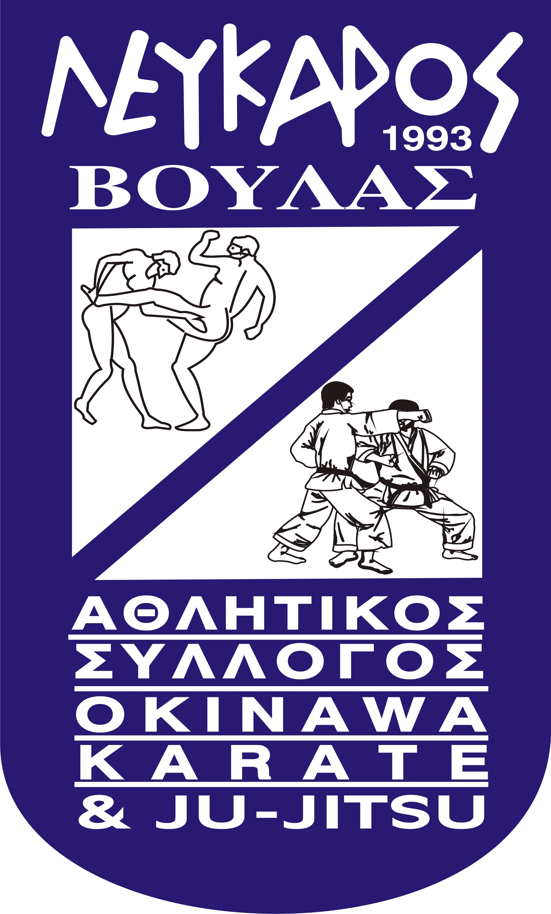

Αρχική



Ο Α.Σ Λεύκαρος Βούλας είναι Πρωταθλητής Ελλάδος στο Ju-Jitsu από το 1997 έως σήμερα και δραστηριοποιείται στο Ju Jitsu , το Okinawa Karate , το Παγκράτιο Άθλημα και το Krav Maga.
Είμαστε ένα μη κερδοσκοπικό σωματείο και ενεργούμε υπό την αιγίδα της Ελληνικής Φιλάθλου Ερασιτεχνικής Ομοσπονδίας Ζίου Ζίτσου (Ε.Φ.Ε.Ο.Ζ.-Ζ.) που είναι αναγνωρισμένη από την Γενική Γραμματεία Αθλητισμού.
Το Διοικητικό Συμβούλιο του Συλλόγου αποτελείται από :
| Πρόεδρος | : Μαρκέτος Γεράσιμος |
| Γενική Γραμματέας | : Φαράκλα Μαρίκα |
| Ταμίας | : Ζερβός Γεράσιμος |
| Α’ Αντιπρόεδρος | : Ρέτσου Ιωάννα |
| Β’ Αντιπρόεδρος | : Αγγελιδάκη Σταματία |
| Γενική Αρχηγός | : Καραγιάννη Αικατερίνη |
| Ειδική Γραμματέας | : Πατζοπούλου Αικατερίνη |
Μαζί με τους προπονητές του Συλλόγου Go-5-dan Master Γιώργο Ζαντώτη και San-3-Dan Master Κώστα Καζάκο που όλα αυτά τα χρόνια εργάζονται ακούραστα δίπλα στους αθλητές μας, δεσμευόμαστε οι στόχοι του Λεύκαρου να επιτευχθούν στο έπακρο και να χαρίσουμε στον Σύλλογο μας ακόμα περισσότερες νίκες.